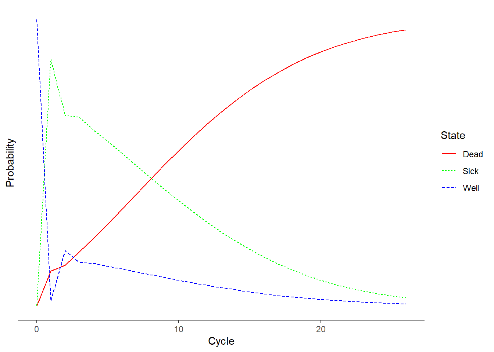
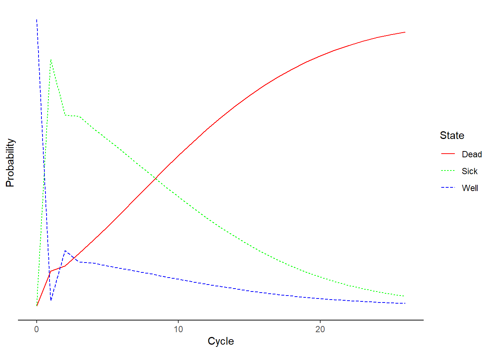

Hello dear readers and welcome to a new post. Today, I would like to resume my current series of posts related to decision analytic models in health economics and focus on some extensions of the simple Markov model structure which I introduced in a post a few months ago. I suggest to check out my previous post for a summary introduction and description of what Markov models are and for what they are used.
A simplifying assumption of traditional Markov models is that the transition probabilities regulating the movement between health states remain constant across the model cycles, i.e. over time. In some cases, this simplification of the reality may represent a too strong assumption that, if kept, may lead to misleading cost-effectiveness results. When this occurs, there are different approaches that can be used to overcome this problem and allow at least some transition probabilities to vary over time. Before going into the technical details on how to do this, I would like first to provide a quick description of the different types of time-dependency that can be allowed for transition probabilities and when a specific type might be preferable to use compared to another. For the topics discussed in this post, I took inspiration from Caldwell (2007), which I strongly suggest to consult if you would like to have a more in-depth look into the matter.
Type of time-dependency
The first type of time-dependency allows transition probabilities to vary according to the time in the model, so that the probability of a transition between states changes as the cohort ages. For example, when modelling the evolution of a deadly disease, it may be more reasonable to assume that the probability of moving to a death state increases as the cohort ages. To ensure this is possible, the starting age of a cohort should be stated, so that the age of the cohort at any cycle of the model is also known. We can then implement age-dependent transition probabilities by having a unique probability for each cycle. Commonly, these cycle-dependent transition probabilities are taken from the literature under the form of national life-tables, where death probabilities for different age groups for the target population are usually reported. In general, it makes sense for the transition probabilities to increase as the cohort ages. In addition, since all transition probabilities in a given cycle need to sum up to 1, the probability of remaining in a given state for the next cycle has also to allow for an age-dependent probability.
The second type of time-dependency allows transition probabilities to vary according to time in state, so that the probability changes as the time spent in a state increases. For example, when modelling the evolution of a deadly disease, it may be more reasonable to assume that the probability to move to a death state from a specific disease state increases as the time spent by patients in that disease state also increases. This can be modelled by assuming that the probability of moving between a given state A to another in the model varies according on how long the patient had been in the given state A, given that all patients start in the model in state A at a given time and that once they leave it they cannot return in it. This allows to keep track of how long a patient has been in state A and makes the transition probability dependent on time in a state equivalent to making it dependent on the age of the cohort.
When external sources providing information on age-dependent transition probabilities are not available, the relationship between a transition probability and time can be estimated using patient-level data, i.e. in the form of a longitudinal study recording the time to an event for each patient. Estimation can then be performed by means of survival analysis methods, which allow to handle (noninformative) censoring which frequently occurs in longitudinal studies, i.e. when observations stop being recorded before a patient has had the chance of experiencing the event of interest. Usually, parametric survival models are employed in order to obtain an estimate of the relation between the risk of experiencing an event and time, represented by the functional form of the hazard function. In particular, of key importance is the survivor function
\[
S(t)=P(T>t)=1-F(t),
\]
denoting the probability of surviving (i.e. not experiencing the event) for a period of time greater than \(t\), with \(F(t)=P(T\leq t)\) being the cumulative density function. We can also express the survivor function in terms of the cumulative hazard function such that
\[
S(t)=\text{exp}\{-H(t)\},
\]
where, $H(t) $denotes the cumulative instantaneous chance of experiencing the event (i.e. hazard rate) at time \(t\), conditional on having survived to time \(t\). Using this relationship, it is possible to derive transition probabilities for Markov models. For example, let’s consider a single type of Markov model with only two states, i.e. alive and death, so that only one transition probability needs to be estimated. Define the length of the Markov cycle as \(u\) and let the instantaneous hazard of death at time \(t\) be \(h(t)\). We now need to estimate the discrete transition probability between the moments \((t-u)\) and \(t\), say \(p(t_u)\), where \(t_u\) indicates that \(t\) is now measured as integer multiples of the cycle length of the model \(u\).
The baseline transition probability of the event of interest can be defined as
\[
p(t_u)=1-\frac{S(t)}{S(t-u)},
\]
which can be re-written in terms of the cumulative hazard as
As a demonstrative example, let’s consider the transition matrix for the assumed transition probabilities for three health states (Well, Sick and Dead) for an hypothetical experimental treatment. Let’s also assume that patients were randomised to one of two treatments, namely Experimental vs Control, and they were considered to be in either a Well or Sick state. Normally, if we kept the assumption of constant transition probabilities within the model, I would be able to compute what the transition matrix will look like after, say, \(1\) month by simply multiplying the initial probabilities by the assumed \(3\times3\) transition matrix. In general, one can compute the proportion of patients for the \(n+1\)-th step in any of these three health states by simply multiplying the updated transition matrix at step \(n\) by the given transition matrix. However, if we relax the assumption of constant transition probabilities over time, we need to create an entirely new transition matrix and specify how its entries changes over time.
For this example, I will focus on the second type of time-dependency under the assumption that time dependence is related to the time spent in a specific state, which requires expanding the state of interest with as many transient states as the number of cycles required to track the history of the cohort in that state. I will be mostly using references and take inspiration from a very nice example code in R provided by Alarid-Escudero et al. (2023). Make sure to check it out if you want to have a more in-depth look at the code and related explanations. For example, if a transition rate decreases over the first three cycles spent in a state and then is constant from the fourth cycle onward, then four transient or “tunnel” states are needed for that state. The cohort resides in each tunnel state for one cycle, after which they either exit the tunnel or transition to the next tunnel state, with the total number of states being \(n_{S\text{tunnel}}=n_{S}+n_{\text{tunnel}}-1\), where \(n_{\text{tunnel}\) is the total number of times a health state needs to be expanded to capture the relevant time dependence. The transition probability matrix also needs to be expanded to incorporate these additional transient states, resulting in a transition probability matrix of dimensions \(n_{S\text{tunnel}}\times n_{S\text{tunnel}}\). If transition probabilities are also dependent on simulation time, then we also need to expand it to a three-dimensional array with dimensions \(n_{S\text{tunnel}}\times n_{S\text{tunnel}}\times n_{T}\).
We will assume that healthy individuals face an age-specific background mortality. Typically, all-cause mortality rates can be obtained from life tables in the form of age-specific mortality hazard rates \(\mu_a\), where \(a\) refers to the specific age considered. Since this is just an example, let’s simulate age-specific mortality rates which are assumed to be specified on a yearly basis for people aged \(50-75\) years.
#define age intervals by yearsage <-rep(50:75)#set length of age vectorage_n <-length(age)#generate age-specific mortality rates in the healthy population (Well)mu_a <-pexp(seq(from=0.5, to=3,by=0.1),rate =0.01) data_age <-data.frame(age,mu_a)data_age
To compute the transition probability from state Well to state Sick, corresponding to the cohort’s age at each cycle, we transform the rate \(\mu_a\) to a transition probability assuming a constant exponential hazard rate within each year of age:
\[
p_{[\text{Well},\text{Sick},t]}=1-\text{exp}(-\mu_{a_0+t}),
\] where \(a_{0}=50\) is the starting age of the cohort. We transform the vector of age-specific rates to a vector of probabilities by adjusting for the cycle length.
# Transform to age-specific background mortality risk for all cycles adjusting by cyclep_a <-1-exp(-mu_a*age_n)
Because mortality in the state Sick is relative to background mortality which depends on age, mortality in this state will also be age-dependent. To generate the age-specific mortality in this state, we multiply the age-specific background mortality rate \(\mu_a\) by the constant hazard ratio for Sick vs Well. We then convert the resulting age-specific mortality rate to probability.
### Transition rates (annual), and hazard ratios (HRs) ----r_ws <-0.15# constant annual rate of becoming Sick when Wellp_ws <-1-exp(- r_ws * age_n) # constant annual probability of becoming Sick when Healthy conditional on surviving r_sw <-0.01# constant annual rate of becoming Well when Sickp_sw <-1-exp(- r_sw * age_n) # constant annual probability of becoming Well when Sickly conditional on surviving # hazard ratio of death in Sick vs Well hr_sick <-3## Age-specific mortality rate in the Sick statemu_a_sick <- mu_a * hr_sick # when Sick## Age-specific probability of dying in the Sick statep_a_sick <-1-exp(-mu_a_sick)
To incorporate simulation-time dependence into the transition probability matrix, we expand the dimensions of the matrix and create a \(3\)-dimensional transition probability array, \(tm_a\) and use it in R, of dimensions \(n_S \times n_S \times n_T\). The first two dimensions of this array correspond to transitions between states, where the rows determine departing states and columns destination states. The third dimension refers to the time since the simulation started. The \(t\)-th element in the third dimension corresponds to the transition probability matrix at cycle \(t\).
First, we initialize the transition probability array with a default value of zero for all transition probabilities.
The code below illustrates how to assign age-dependent transition probabilities in the third dimension of the array. Most of this code is equivalent to populating the matrix tm_a for time-independent models. The only difference is the empty index added to the third dimension to represent the vector of transitions over time. For time-varying transitions, we provide a vector of transition probabilities. We only need to provide one value for the transition probability for constant transitions over time, and R replicates the value of such transitions as many times as the number of cycles (\(n_T+1\) times in our example). To ensure that the sum of each row of each cycle-specific matrix equals one, we define the probability of staying in each state by subtracting the sum of the exiting probability vectors from one after conditioning on surviving each cycle. Finally, we initialize the transition probability array for an hypothetical control group as a copy of the matrix for the treatment but assuming a different (worse) hazard ratio for moving from Sick to the Dead state.
### Fill in array## From Welltm_a["Well", "Well", ] <- (1- p_a) * (1- p_ws)tm_a["Well", "Sick", ] <- (1- p_a) * p_wstm_a["Well", "Dead", ] <- p_a## From Sicktm_a["Sick", "Well", ] <- (1- p_a_sick) * p_swtm_a["Sick", "Sick", ] <- (1- p_a_sick) * (1- p_sw)tm_a["Sick", "Dead", ] <- p_a_sick## From Dtm_a["Dead", "Dead", ] <-1## Initialize transition probability matrix for control as a copy of the treatment TP matrixtm_a0 <- tm_a# hazard ratio of death in Sick vs Well under controlhr_sick_0 <-3.5## Age-specific mortality rate in the Sick state under controlmu_a_sick_0 <- mu_a * hr_sick_0 # when Sick## Age-specific probability of dying in the Sick state under controlp_a_sick_0 <-1-exp(-mu_a_sick_0)## Update only transition probabilities from Sick to Dead involving p_S## From Sicktm_a0["Sick", "Well", ] <- (1- p_a_sick_0) * p_swtm_a0["Sick", "Sick", ] <- (1- p_a_sick_0) * (1- p_sw)tm_a0["Sick", "Dead", ] <- p_a_sick_0
Next, we initialise, set up and run the model under the assumption that everyone in the cohort starts in the Well state and progresses towards the Dead state according to age-specific and treatment-specific transition probability matrices.
# Construct state-transition models ----## Initial state vector ----#* All starting healthyv_m_init <-c(Well =1, Sick =0, Dead =0) # initial state vector## Initialize cohort traces ----### Initialize cohort trace under control ----m_M_0 <-matrix(NA, nrow = (n_t +1), ncol = n_s, dimnames =list(0:n_t, state_names))#* Store the initial state vector in the first row of the cohort tracem_M_0[1, ] <- v_m_init### Initialize cohort trace for the new treatment ---#* Structure and initial states are the same as for controlm_M_1 <- m_M_0 # trt 1## Create transition dynamics arrays ----#* These arrays will capture transitions from each state to another over time ### Initialize transition dynamics array for control ----arr_0 <-array(0,dim =c(n_s, n_s, n_t +1),dimnames =list(state_names, state_names, 0:n_t))#* Set first slice of arr_0 with the initial state vector in its diagonaldiag(arr_0[, , 1]) <- v_m_init### Initialize transition-dynamics array for new treatment ----#* Structure and initial states are the same as for controlarr_1 <- arr_0# Run Markov model ----#* Iterative solution of age-dependent TPsfor(t in1:n_t){## Fill in cohort trace# For 0 m_M_0[t +1, ] <- m_M_0[t, ] %*% tm_a0[, , t]# For 1 m_M_1[t +1, ] <- m_M_1[t, ] %*% tm_a[, , t]## Fill in transition-dynamics array# For 0 arr_0[, , t +1] <-diag(m_M_0[t, ]) %*% tm_a0[, , t]# For 1 arr_1[, , t +1] <-diag(m_M_1[t, ]) %*% tm_a[, , t]}#trt namestrt_names <-c("Control","Treatment")## Store the cohort traces in a list ----l_m_0 <-list(Control = m_M_0,Treatment = m_M_1)names(l_m_0) <- trt_names## Store the transition dynamics array for each strategy in a list ----l_a_1 <-list(Control = arr_0,Treatment = arr_1)names(l_a_1) <- trt_names## Store the transition dynamics array for each strategy in a list ----l_a_A <-list(Control = arr_0,Treatment = arr_1)names(l_a_A) <- trt_names
The state vector of the cohort’s distribution at cycle \(t + 1\) is obtained by applying updating the transition probability matrix, obtained by the the matrix product between the row vector m_M_0[t, ] and the transition probability matrix tm_a0[, , t]. The vectors across all cycles are obtained by iteratively applying this update to each transition probability matrix of tm_a0 across the third dimension using a for loop. Figure 1 and Figure 2 shows the cohort’s trace for all cycles of the age-dependent model under the control and treatment group, respectively.

Figure 1: Cohort trace under control.

Figure 2: Cohort trace under treatment.
Once the transition probabilities over the desired number of cycles are estimated/filled in, further data manipulation can be carried out to estimate the expected costs and effects, which can be included in an additional vector and then multiplied with the elements of the matrices after each cycle to generate the expected total costs and effects. We need to associate to each health state and treatment in the model a corresponding value for each of the outcomes that we want to measure, i.e. costs and utilities. Thus, we may assume that (yearly) utilities for each health state are \(u^{well}=1\), \(u^{sick}=0.75\), and \(u^{dead}=0\) (across treatments). We may also assume that (yearly) costs vary between treatment groups and health states (Well, Sick, Dead), i.e. \(c_{trt}=(2000,16000,0)\) and \(c^{ctr}=(2000,4000,0)\). We also include utility and cost specific (yearly) values depending on whether the new treatment was received by the patient, such that: \(u^{\text{treated}}=0.95\), \(c^{\text{treated}}=12000\). Similarly, we introduce some penalties in terms of disutility or costs for those patients moving from Well to Sick or Dead state: \(u^{\text{WS}}=-0.01\), \(c^{\text{WS}}=1000\), \(c^{\text{D}}=2000\). Next, we need to determine the number of cycles of the model. In this case, we will use \(26\) cycles with each cycle being \(1\) year long. Hence, the expected costs and QALYs for each month will be generated and then added up. Since the assessment covers a period longer than one year, we also apply discounting to utilities and costs using some pre-defined (annual) discount rates: \(d^u=0.015\) and \(d^c=0.035\)
### State rewards ----#### Costs ----c_well <-2000# annual cost of being Wellc_sick <-4000# annual cost of being Sickc_D <-0# annual cost of being deadc_1 <-12000# annual cost of receiving treatment #### Utilities ----u_well <-1# annual utility of being Healthyu_sick <-0.75# annual utility of being Sicku_D <-0# annual utility of being deadu_1 <-0.95# annual utility when receiving treatment ### Transition rewards ----du_ws <-0.01# disutility when transitioning from Well to Sickic_ws <-1000# increase in cost when transitioning from Well to Sickic_D <-2000# increase in cost when dying### Discount weight for costs and effects ----cycle_length <-1#1 yeard_c =0.035# annual discount rate for costs d_e =0.015# annual discount rate for QALYs,v_dwc <-1/ ((1+ (d_c * cycle_length)) ^ (0:n_t))v_dwe <-1/ ((1+ (d_e * cycle_length)) ^ (0:n_t))# State Rewards ----## Scale by the cycle length ----#* Vector of state utilities under controlv_u_0 <-c(Well= u_well, Sick = u_sick, Dead = u_D) * cycle_length#* Vector of state costs under controlv_c_0 <-c(Well = c_well, Sick = c_sick,Dead = c_D) * cycle_length#* Vector of state utilities under trtv_u_1 <-c(Well = u_well, Sick = u_1, Dead = u_D) * cycle_length#* Vector of state costs under trtv_c_1 <-c(Well = c_well, Sick = c_sick + c_1,Dead = c_D) * cycle_length## Store state rewards ----#* Store the vectors of state utilities for each strategy in a list l_u <-list(Control = v_u_0,Treatment = v_u_1)#* Store the vectors of state cost for each strategy in a list l_c <-list(Control = v_c_0,Treatment = v_c_1)#* assign strategy names to matching items in the listsnames(l_u) <-names(l_c) <- trt_names# Compute expected outcomes ----#* Create empty vectors to store total utilities and costs v_tot_qaly <- v_tot_cost <-vector(mode ="numeric", length =2)names(v_tot_qaly) <-names(v_tot_cost) <- trt_names
We are then ready to compute the expected outcomes based on the model results.
#define number of strategies n_str <-2## Loop through each strategy and calculate total utilities and costs ----for (i in1:n_str) { # i <- 1 v_u_str <- l_u[[i]] # select the vector of state utilities for the i-th strategy v_c_str <- l_c[[i]] # select the vector of state costs for the i-th strategy a_A_str <- l_a_A[[i]] # select the transition array for the i-th strategy##* Array of state rewards #* Create transition matrices of state utilities and state costs for the i-th strategy m_u_str <-matrix(v_u_str, nrow = n_s, ncol = n_s, byrow = T) m_c_str <-matrix(v_c_str, nrow = n_s, ncol = n_s, byrow = T)#* Expand the transition matrix of state utilities across cycles to form a transition array of state utilities a_R_u_str <-array(m_u_str, dim =c(n_s, n_s, n_t +1),dimnames =list(state_names, state_names, 0:n_t))# Expand the transition matrix of state costs across cycles to form a transition array of state costs a_R_c_str <-array(m_c_str, dim =c(n_s, n_s, n_t +1),dimnames =list(state_names, state_names, 0:n_t))##* Apply transition rewards#* Apply disutility due to transition from Well to Sick a_R_u_str["Well", "Sick", ] <- a_R_u_str["Well", "Sick", ] - du_ws#* Add transition cost per cycle due to transition from Well to Sick a_R_c_str["Well", "Sick", ] <- a_R_c_str["Well", "Sick", ] + ic_ws#* Add transition cost per cycle of dying from all non-dead states a_R_c_str[-n_s, "Dead", ] <- a_R_c_str[-n_s, "Dead", ] + ic_D###* Expected QALYs and costs for all transitions per cycle#* QALYs = life years x QoL a_Y_c_str <- a_A_str * a_R_c_str a_Y_u_str <- a_A_str * a_R_u_str ###* Expected QALYs and costs per cycle##* Vector of QALYs and costs v_qaly_str <-apply(a_Y_u_str, 3, sum) # sum the proportion of the cohort across transitions v_cost_str <-apply(a_Y_c_str, 3, sum) # sum the proportion of the cohort across transitions##* Discounted total expected QALYs and Costs per strategy#* QALYs v_tot_qaly[i] <-t(v_qaly_str) %*% (v_dwe)#* Costs v_tot_cost[i] <-t(v_cost_str) %*% (v_dwc)}
We can then assess the model results, for example by looking at the total cost and QALY difference over the model time horizon.
v_tot_cost
Control Treatment
32246.3 108303.2
v_tot_qaly
Control Treatment
7.794361 9.458081
from which an estimate of the mean costs and QALYs difference between the two groups can be obtained as
Perhaps next time I will focus on how to perform sensitivity analysis for these models. Thanks for following and till the next time!
References
Alarid-Escudero, Fernando, Eline Krijkamp, Eva A Enns, Alan Yang, MG Myriam Hunink, Petros Pechlivanoglou, and Hawre Jalal. 2023. “A Tutorial on Time-Dependent Cohort State-Transition Models in r Using a Cost-Effectiveness Analysis Example.”Medical Decision Making 43 (1): 21–41.
Caldwell, Deborah. 2007. “Decision Modelling for Health Economic Evaluation. A Briggs, m Sculpher, k Claxton.” Oxford University Press.
![]()